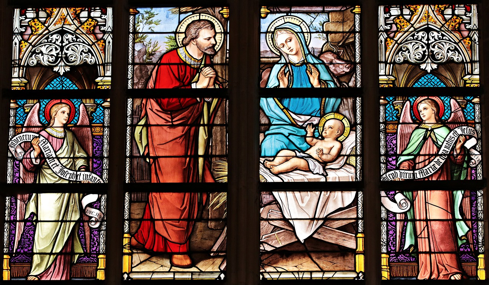

Our Gallery


Our Mission
At global christians, we are committed to spreading the message of faith through worship, community service, and love. Join us as we create a deeper spiritual connection.
Sunday Service
Every Sunday at 10:00 AM
Bible Study
Wednesdays at 7:00 PM
Youth Fellowship
Fridays at 6:30 PM
Our Mission
At Global Christians, we are committed to spreading the message of faith through worship, community service, and love. Join us as we create a deeper spiritual connection.
From Our Blog
The Power of Faith
How faith can move mountains. Read more about the importance of keeping faith in challenging times.
Read MoreBuilding Community
Our mission to build stronger connections within our church and beyond.
Read MoreServing Together
Ways to get involved and serve within our church community and local outreach programs.
Read MoreFind Us
We are located at P.O. Box 40, Rhoadesville, VA 22542, USA.